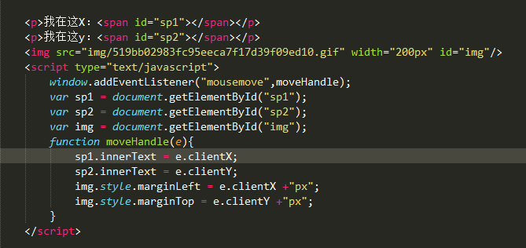

Dom event 事件
onclick 事件
举个栗子： onclick="alert('今天天气不错')" //值得注意的是这里当外面是双引号的时候，那里面就是单引号
HTML DOM on事件
id = "pp"
var pp = document.getElementById("pp");
pp.onclick = function(){
alect("明天约妹子去")
}
以上2个事件支持所有浏览器
HTML DOM W3C标准事件
note:浏览器支持性
pp.addEVentlistener(click,clickHander);
function clickHander(e){
console.log(e.target)
alect("明天周二了") //次事件IE6以下的浏览器都不支持使用，如果你还用，你已近是远古时代的动物了。所以不推荐
}
事件流
主要是从捕获到冒泡的过程 过程如下
捕获： window document body div text
冒泡：text div body document window
捕获就是从上到下的捕捉目标，而冒泡就是目标从下而上的过程，要经过每一个元素
事件代理 或者是事件委托
首先给父元素一个监听事件
监听 动态的添加图片
显示X轴位置
显示Y轴位置

disabled 事件
键盘事件
onkeydown事件会在用户按下一个键盘按键时发生。
键盘按下的时候，控制文本框的输入值为字母 而不是数字
keyCode 属性返回onkeypress事件触发的键的值的字符代码，或者 onkeydown 或 onkeyup 事件的键的代码。